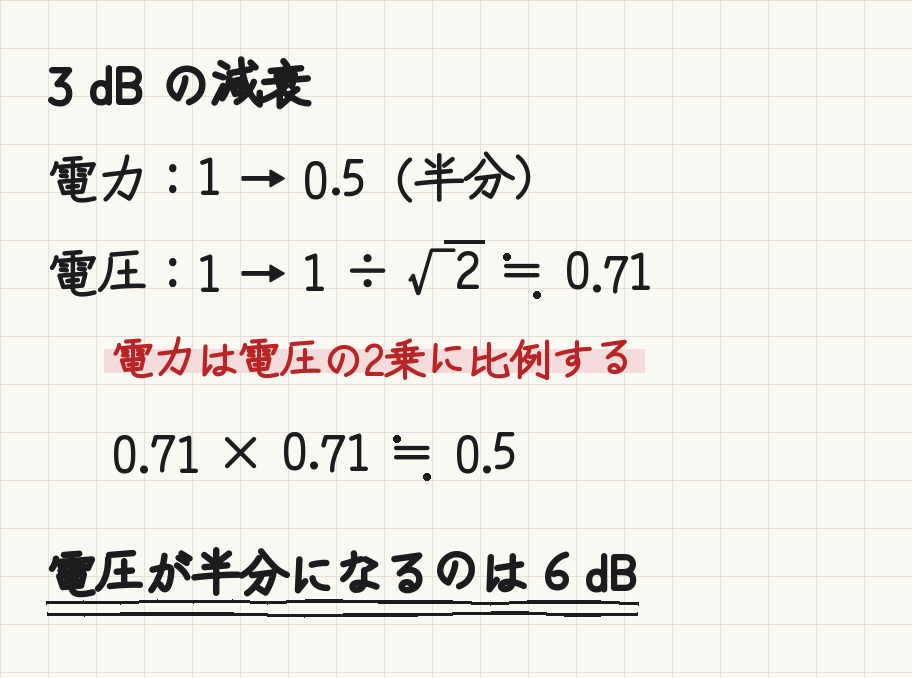

3 dB の減衰：半分になるのは、電力か電圧か
「3 dB 下がる」と聞いて、何が半分になるのかで迷います。一陸技の問題では、ここを取り違えると、答えが選択肢の別の値に当たってしまいます。
先に答え3 dB の減衰で半分になるのは、電力です。電圧は √2 分の1（約0.71倍）になります。電圧が半分になるのは、6 dB の減衰のときで、そのとき電力は4分の1です。
どこで止まるか
止まる原因言葉や記号の意味が書かれていない同じ dB の値でも、電力の比として読むか、電圧の比として読むかで倍率が変わることが、書き分けられていないことが多くあります。
「3 dB の減衰器を入れたので、電圧は半分」としてしまう。
dB の値は1つ、読み方が2つ
減衰器が減らす量は、dB で1つに決まっています。それを電力で読むか、電圧で読むかで、倍率が変わります。電力は電圧の2乗に比例するので、電圧の倍率は、電力の倍率の平方根です。
| 減衰 | 電力 | 電圧 |
|---|---|---|
| 3 dB | 2分の1 | √2 分の1（約0.71倍） |
| 6 dB | 4分の1 | 2分の1 |
| 10 dB | 10分の1 | √10 分の1（約0.32倍） |
| 20 dB | 100分の1 | 10分の1 |
数値で確かめる
1 V の信号に、3 dB の減衰器を入れる
電圧は 1 ÷ √2 ≒ 0.71 V
電力は、電圧の2乗に比例するので 0.71 × 0.71 ≒ 0.5倍
電圧は 1 ÷ √2 ≒ 0.71 V
電力は、電圧の2乗に比例するので 0.71 × 0.71 ≒ 0.5倍
問題が電圧の変化を聞いているときは、先に電圧の倍率（√2 分の1）に直してから、先へ進みます。

確かめの1問
6 dB の減衰器を入れると、電圧と電力は、それぞれ何倍になりますか。
6 dB の減衰器を入れると、電圧と電力は、それぞれ何倍になりますか。
答え
電圧は2分の1、電力は4分の1。紙の上で繰り返して固めたい方へ：書き込み式の問題集の案内 ／ 数を入れて確かめる：デシベルの計算の道具
最終更新：2026年11月16日